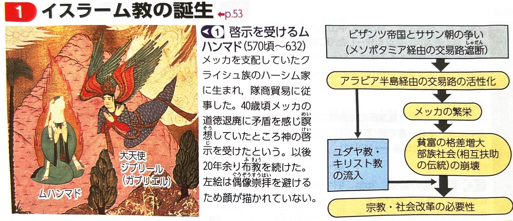
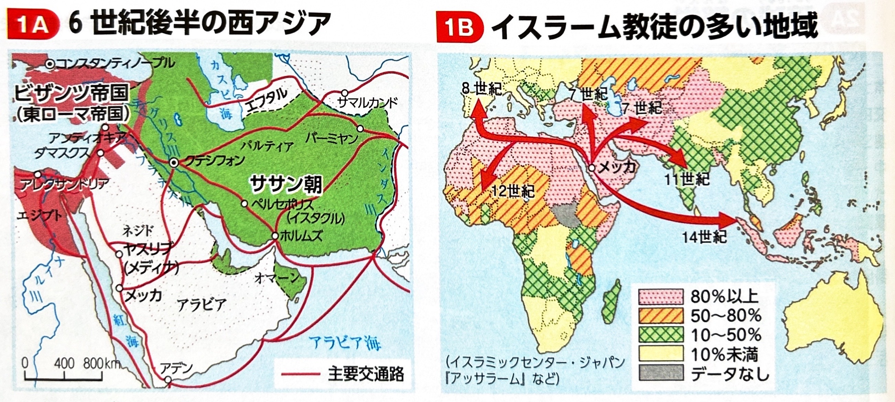
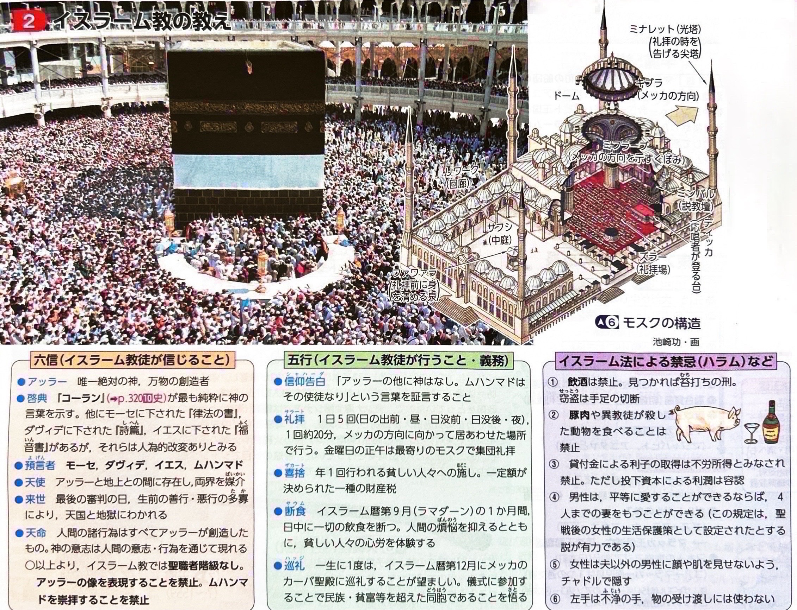
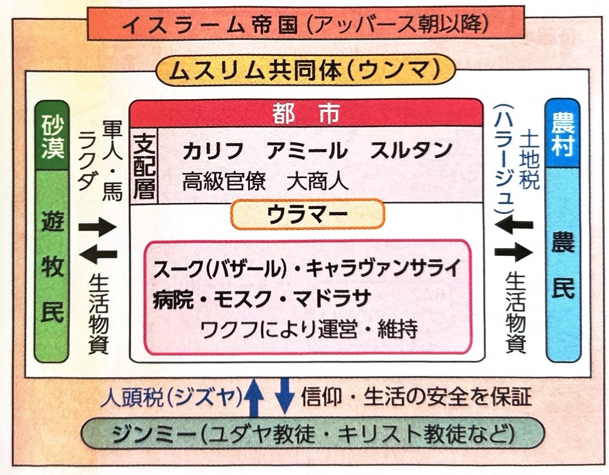
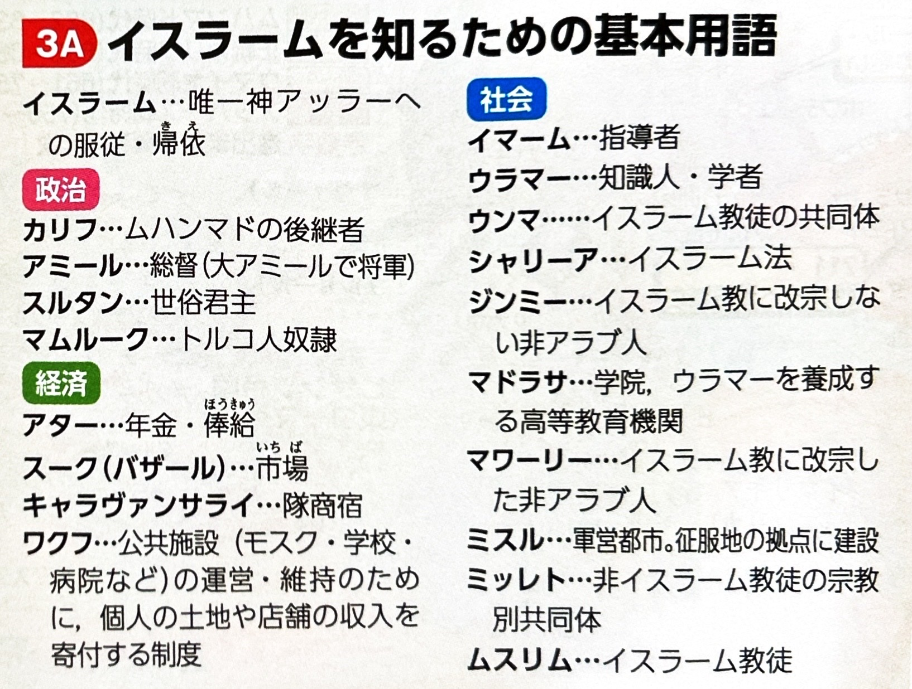
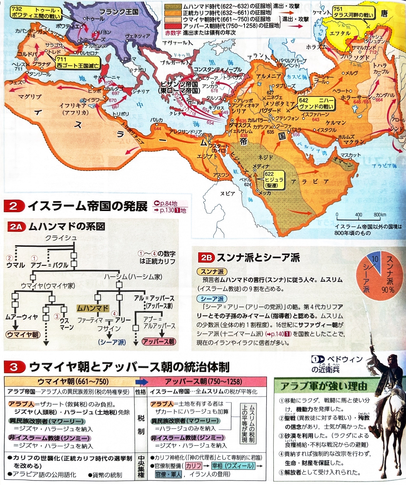
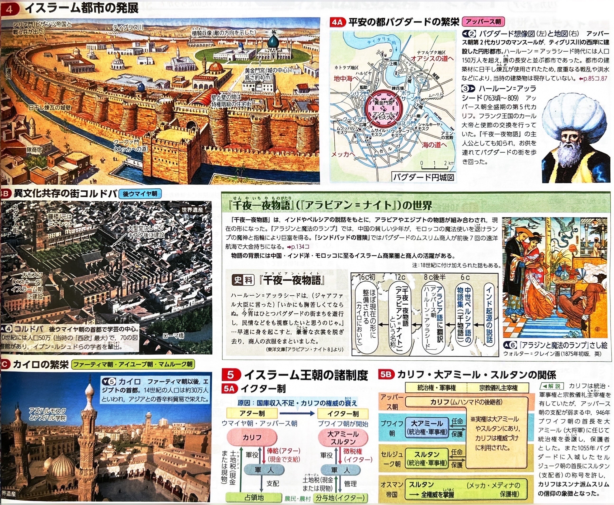
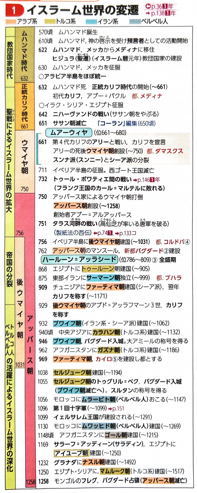

イスラーム史①（ムハンマド〜アッバース朝）
7世紀、アラビア半島で誕生したイスラーム教は、遊牧民の機動力と「神の前の平等」という教えを武器に、瞬く間に世界帝国へと成長しました。
1. イスラーム教の誕生
6世紀以降、ビザンツ帝国（東ローマ帝国）とササン朝（イラン）の抗争を避けるため、東西交易のルートがアラビア半島西岸（ヒジャーズ地方）を経由するようになり、メッカなどの都市が繁栄しました。しかし、貧富の差も拡大していました。
メッカの商人であったムハンマド（マホメット）が、唯一神アッラーの啓示を受け、「神の前の平等」を説くイスラーム教の布教を開始しました。彼は、当時のメッカにあった多神教・偶像崇拝の中心地であるカーバ神殿を批判しました。
迫害を受けたムハンマドと信徒たちは、メッカから北のメディナ（旧称ヤスリブ）へ移住しました。この出来事をヒジュラ（聖遷）といい、イスラーム教徒の共同体（ウンマ）が成立したこの年をイスラーム暦の元年とします。
勢力を拡大したムハンマドはメッカを征服し、カーバ神殿の偶像を破壊してイスラームの聖殿としました。632年に彼が没するまでに、アラビア半島はほぼ統一されました。





2. 正統カリフ時代（632年〜661年）
ムハンマドの死後、信徒たちは「カリフ（後継者）」を選挙で選び、聖戦（ジハード）によって急激に領土を拡大しました。
- 第2代 ウマル：シリア・エジプトをビザンツ帝国から奪い、642年のニハーヴァンドの戦いでササン朝軍を撃破し、のちに滅亡（651年）させました。
- 第3代 ウスマーン：神の啓示をまとめた聖典『コーラン（クルアーン）』が編纂・完成しました。
- 第4代 アリー：ムハンマドの従弟で娘婿でしたが、対立勢力（ウマイヤ家など）との抗争の末に暗殺されました。この事件を機に、アリーとその子孫のみを正当な指導者と認める「シーア派」と、代々のカリフを正当と認める多数派の「スンナ派」への分裂が決定的となりました。

3. ウマイヤ朝（661年〜750年）
アリーを暗殺したのち、シリア総督のムアーウィヤがカリフの世襲を宣言して建国しました。
| 項目 | 特徴 |
|---|---|
| 都 | シリアのダマスクス |
| 最大版図 | 東は中央アジアから、西は北アフリカを経てイベリア半島にまで達しました。711年にはゲルマン人国家の西ゴート王国を滅ぼし、さらにフランク王国へ侵入しましたが、732年のトゥール・ポワティエ間の戦いで敗れ、ヨーロッパ内陸への進出は阻止されました。 |
| アラブ人至上主義 | 軍営都市（ミスル）を建設し、征服地の住民から税を取り立てました。アラブ人は免税特権を持つ一方で、非アラブ人の新改宗者（マワーリー）には税が課されたため、彼ら（特にイラン人のシーア派など）の不満が高まりました。 |

4. アッバース朝（750年〜1258年）
マワーリーらの不満を利用して、アブー＝アルアッバースがウマイヤ朝を倒し（アッバース革命）、新王朝を開きました。
第2代カリフのマンスールは、ティグリス川のほとりに円形の計画都市バグダードを建設しました。
アッバース朝の最大の特徴は「すべてのアッラーの信徒（ムスリム）の平等」が実現した点です（「イスラーム帝国」とも呼ばれます）。
- 税制の平等化：アラブ人の免税特権は廃止され、イスラーム教徒であれば人頭税（ジズヤ）が免除され、土地税（ハラージュ）のみを負担するようになりました。（※異教徒でもジズヤを払えば信仰が認められました。）
第5代カリフであるハールーン＝アッラシードの時代に最盛期を迎えました。バグダードは国際商業都市として繁栄し、その様子は『千夜一夜物語（アラビアン・ナイト）』の背景として描かれています。
